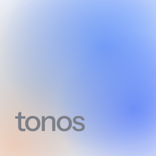

TonosTonos is a wellness app, not medical care.
By using Tonos you agree to these terms. Tonos is published by Aidan Niswender (“we”).
What Tonos is
Tonos offers general posture and strength exercises based on your answers and, optionally, photos measured on your device. It does not diagnose, treat, cure, or prevent any condition, and it is not a substitute for a doctor, physiotherapist, or other clinician. Using Tonos does not create a clinician–patient relationship. The posture score and findings describe patterns the app measured; they are not a medical assessment, and the score’s weights are the app’s own, not a clinical scale.
Sources
The published sources listed in the app under Sources & method are given so you can read the work behind the app. They are general information. Citing a study, guideline, or training approach does not mean its authors or owners reviewed, endorse, or are affiliated with Tonos.
Your responsibility and risk
Exercise carries a risk of injury. You choose whether and how to do each exercise, and you take on that risk. Stop any exercise that causes sharp, pinching, or electric pain, and use the “This hurts” control so it is removed from your routine. If you have, or suspect you have, a condition affecting your spine, joints, or nerves, or you are pregnant or recently postpartum, check with a clinician before using Tonos. Answer the safety questions honestly; the routine depends on them.
Tonos is not for emergencies. If you have symptoms such as numbness in the groin, loss of bladder or bowel control, sudden weakness, or chest pain, contact emergency services or a clinician immediately.
Users under 18 need a parent or guardian’s permission. Routines are designed for adults.
Tonos Pro
The scan and report are free. Your routine requires Tonos Pro, available as:
- Monthly — $12.99 per month, auto-renewing.
- Yearly — $59.99 per year, auto-renewing, with a two-week free trial for new subscribers.
- Lifetime — $99.99, a one-time purchase that does not renew.
Prices are in US dollars and may vary by country. Subscriptions are billed through your Apple Account and renew automatically unless cancelled at least 24 hours before the end of the current period. A free trial converts to a paid subscription unless cancelled before it ends. Manage or cancel in Settings → Apple Account → Subscriptions. Refunds are handled by Apple under App Store terms. Apple’s standard licensed application end user license agreement also applies.
Your data
Everything you enter stays on your device. See the privacy policy.
No warranty
Tonos is provided “as is” and “as available.” To the fullest extent permitted by law, we make no warranties of any kind, express or implied, including that the app is accurate, fit for a particular purpose, or will produce any particular result.
Limitation of liability
To the fullest extent permitted by law, we are not liable for any injury, loss, or damage arising from your use of Tonos, including indirect or consequential loss. Where liability cannot be excluded, it is limited to the amount you paid for Tonos in the twelve months before the claim. Nothing in these terms limits liability that cannot be limited by law, or your rights as a consumer under the law where you live.
Indemnity
You agree to cover any claim made against us by someone else that arises from your misuse of Tonos or your breach of these terms.
General
If any part of these terms cannot be enforced, the rest still applies. We may update these terms; the current version is always at this address. Continued use after a change means you accept it.